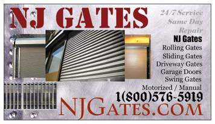

Rolling Gate - Installation, Repair and Maintenance
Rolling Gate - Installation, Repair and Maintenance
Rolling Gate New Jersey

Welcome to Rolling Gate New Jersey our company is pecialising in Steel Security Fencing, Gates & Accessories Rolling Gate New Jersey are market leaders within our field. With many years of trading and a full research and development team we aim to continue offering quality products & services whatever your application.
All of our gates can easily automated inline with current safety regulations to ensure that your electric gate operates exactly how you require it to safely.
Whatever your security needs contact us today at
Security fencing
Welcome to Rolling Gate New Jersey , specialists in high quality security fencing. Our security fencing is safe, reliable and can be custom made to meet your every requirement. You can even submit your ideas to us, and we will be more than happy to provide you with a quotation.
Railings
Are you looking out for high quality railings for security purposes? Welcome to Rolling Gate New Jersey , where we will give you just that. You can trust us when it comes to quality and reliability, as we have been in this business for years. We are positive that you will not be disappointed with our railings as we build them to tried and tested specifications.
Auotmatic gates
We all want our property to be secure and one of the best ways to ensure this is with the use of automatic gates. For a lot of businesses, security is an important factor particularly when there are people constantly coming in and out of your premises. But with automatic gates, these people can be easily controlled and these gates can also make the business appear more professional.
Security gates
Security is a very important aspect that should not be taken for granted. Rolling Gate New Jersey has over 30 years of experience in the field of specialised security gates, so you can feel absolutely safe about our products. We have a wide range of security gates such as double and single leaf gates, sliding gates as well as automation systems.
Fencing contractor
Do you want the best Fencing contractor available in the market? If your answer is yes, you have come to just the right place. Our products are manufactured in house so we can guarantee you will be getting the best quality. For the best fencing contractor, you can be sure to count on Rolling Gate New Jersey .
Sliding gates
Sliding gates are very convenient to operate, and are made so specifically for areas that are in need of high-level security. From commercial and industrial sites to prisons and banks, our sliding gates can be used for just about any purpose. Feel free to go through our site to find out more about our sliding gates.
Mesh fencing
Mesh fencing has a lot of advantages. Not only does it provide a high level of security, but at the same time ensures excellent visibility. Check out our mesh fencing systems, which can be used in a variety of areas such as schools, play areas, airports and military installations to name a few.
Cantilever gates
Rolling Gate New Jersey has the best cantilever gates available in the market. They act as a proficient barrier, and can oppose most forms of security threat to your property. With our cantilever gates, you can have complete peace of mind, knowing that your property is safe and secure.